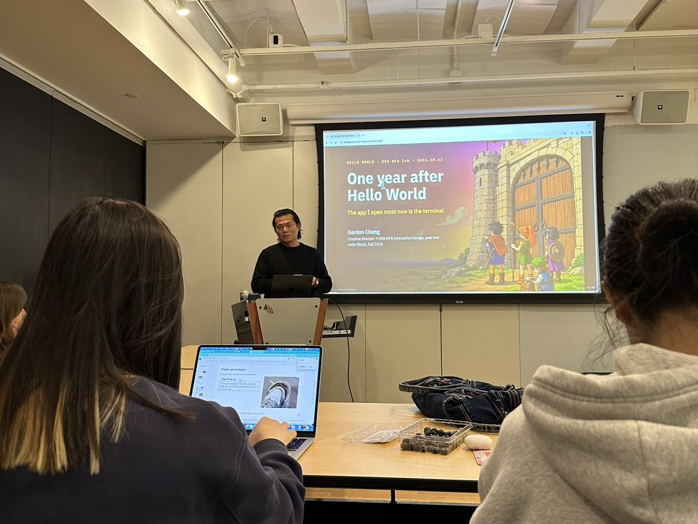
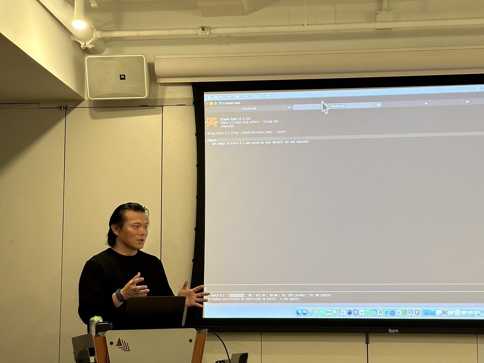
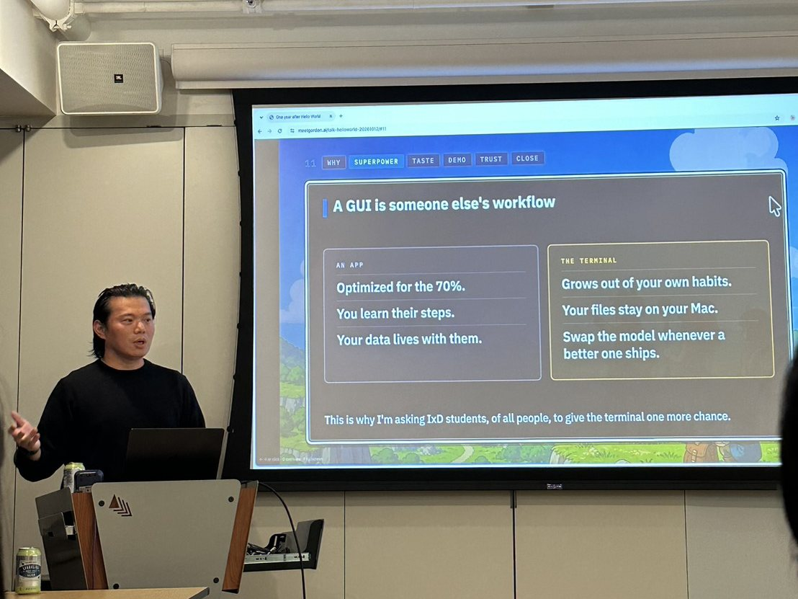

One year after Hello World
A year ago I was a first-year in Hello World, the intro coding course in the MFA Interaction Design program at SVA. On the first night of class I wrote my first Python program. Two lines. The second one had a bug.
On October 12, Carrie Kengle, who teaches the course with Bruno Kruse, invited me back to the same class to share how I work with AI agents now. I'm in my second year of the program, and I still can't quite believe it.

A hard first semester
I'm not a programmer. I came to interaction design after many years in advertising, and part of why I chose IxD was to move closer to technology. That made Hello World feel important. It also made every assignment hard.
VS Code. An IDE. GitHub. Pull and push. What a repo even is. On top of that, homework from every other class. My first GitHub repo still has the commits where I deleted two files I had named by mistake. One of them was called for x in range(1,10):.py.py. In Week 4 we had to install Homebrew and set up a Python virtual environment, and that was the first time the terminal really beat me. My README from those weeks says "Keep rewinding." One of my project files starts with "(not completed yet)."
Their faces
What I remember most from that semester is Carrie and Bruno demoing Claude Code in the terminal. I couldn't follow what was happening. But I remember their faces. They looked like the world had already changed. And they still told us the basics hadn't: the logic, the fundamentals of programming.
I didn't understand it then, but I knew it was out there. If I had never seen the terminal and Claude Code in that class, I would never have gone looking for them.
Three weeks of winter break
The real change came in the three weeks between semesters, from December 25 to January 14.
I started in Cursor, and I asked Cursor to install and set up Claude Code for me. I didn't read a manual. One tool installed the next. That was the first time I didn't have to start from scratch.
At 4:54 on Christmas morning I finished the first tool I ever built for myself: a Chrome extension that sends one question to Claude, ChatGPT and Perplexity at once. Nobody assigned it. Two days later I used Claude Code for the first time, and in that same session I had it re-explain the whole Hello World course to me in Mandarin ("a variable is a box for information"). I didn't skip the basics. I had them taught to me again, in my own language.
By mid-January I had an event finder that emails me every Monday and a voice-memo organizer that files my recordings by my class calendar. Both are still running. Somewhere in there I saw Ghostty on Twitter and started living in the terminal, a little at a time.

What I told this year's first-years
The subtitle on my cover slide was a plain fact: the app I open most now is the terminal. A year ago I could not have imagined that sentence.
Here is some of what I tried to pass on.
You don't start from scratch anymore. I still had to learn the logic Carrie and Bruno taught us, and I still have to learn architecture. What AI took off my plate was a lot of the math and puzzle-solving that used to come before you could build anything. That feels fair and unfair at the same time. The hard part moved. And I've made things I never would have dared to try, including the web page that ran my slides that night.
An app is a workflow someone else designed, and I learn its steps. In the terminal, the workflow can grow out of my own habits. My files stay on my own computer, and I can switch to whichever model is best that month.
One prompt is only the start. An LLM predicts the most likely answer, and likely means average. Companies sell the idea that one prompt gets you a solution. For me, the work starts to feel like mine after many rounds of deciding what to keep and what to change. These days the AI often prompts me, and I answer. That judgment is my taste. It's what I'm in design school to build, and it's where the time I save goes.
Back up first, then say yes. An agent will ask your permission a lot, often for things you can't judge yet. Before you let it into a folder, make a copy. When a request doesn't make sense, ask it to explain in plain words before you approve. Money, passwords, and anything that can't be undone still get a no.

Thank you, Carrie
This talk started with a moment in Carrie's classroom a year ago. Thank you, Carrie, for teaching us the basics while the world was already changing, and for inviting me back. Thank you to Bruno, and to SVA MFA Interaction Design for the year in between. And thank you to this year's first-years for giving me an hour of their Monday night.
My last slide said this is a self-taught era. The tools keep changing, and we'll all keep teaching ourselves. But I only knew where to start because of what I saw in Hello World.
The slides are online at meetgordon.ai/talk-helloworld-20261012. If you're just starting out, or you'd like me to bring this to your class or community, write to me at hi@meetgordon.ai.